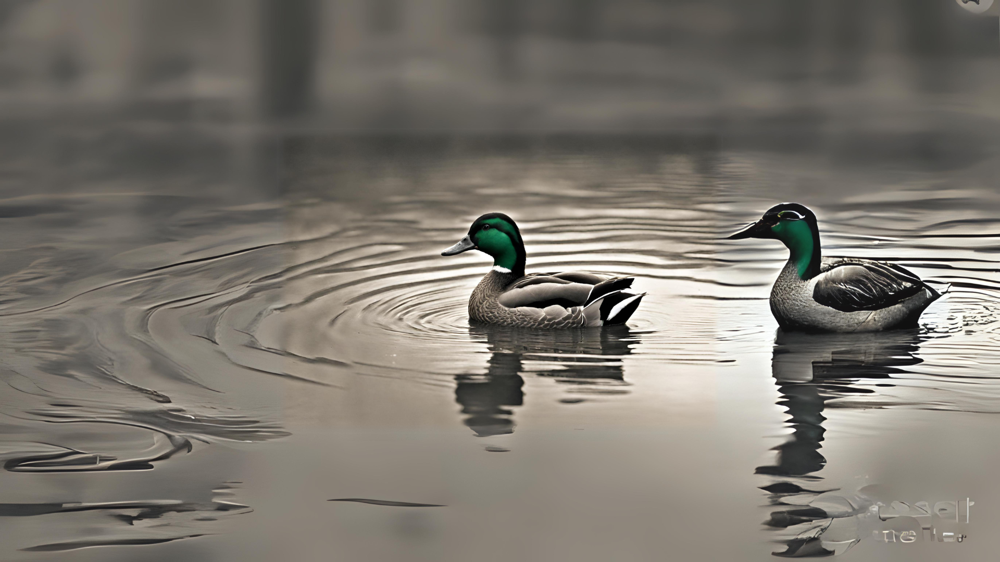
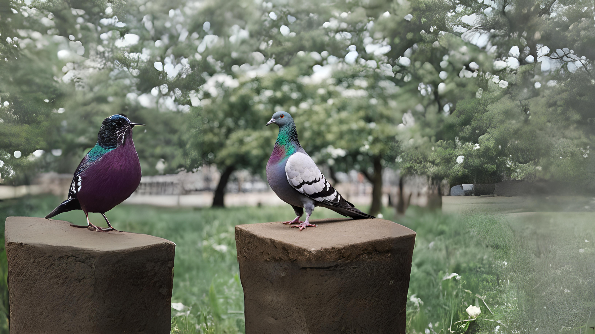
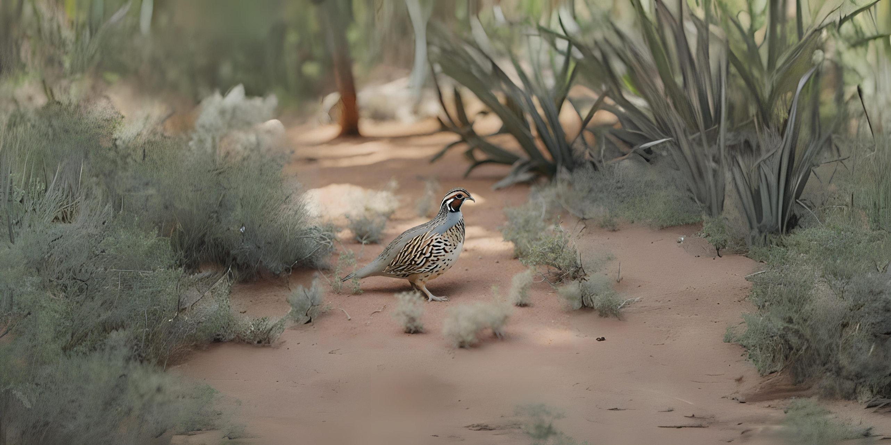
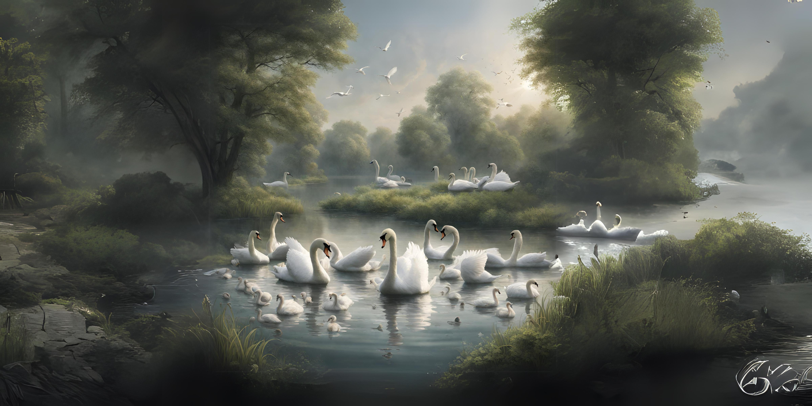

Merak

Merak secara alami menggugurkan bulunya setiap tahun setelah musim kawin. Terkadang, banyak orang yang mengumpulkan bulu ekor merak sebagai koleksi karena keindahan yang dimilikinya
credit : www.liputan6.comBebek
Bebek adalah perenang berbakat yang memiliki bulu tahan air dan bahan seperti lapisan lilin yang melindungi bulu bagian bawah agar tetap hangat dan kering. Bebek bisa berenang di air dingin tanpa kedinginan karena kaki mereka memiliki pembuluh darah yang berdekatan sehingga tidak kehilangan panas.
credit : www.liputan6.comMerpati
Burung merpati berbeda dengan kebanyakan jenis burung lain yang kebanyakan menyelipkan kepala hingga bulu pundaknya. Sedangkan, burung merpati tidur pada malam hari dengan menyandarkan kepala di antara bahu, dekat dengan tubuh.
credit : www.liputan6.comPuyuh
Meskipun ukurannya kecil, burung puyuh memiliki kemampuan terbang yang luar biasa. Mereka dapat terbang hingga ketinggian 300 meter di udara.
credit : www.liputan6.comAngsa
Angsa lebih suka makan makanan basah di atas air, agar lebih mudah dikonsumsi. Pasalnya, ketika makan di darat, angsa rentan terhadap bahaya lingkungan, misalnya, mereka dapat menelan batu dan partikel yang dapat membahayakan tubuh mereka.
credit : www.liputan6.comKalkun

Kalkun dapat bertelur 10-12 biji dalam sekali musim kawin. Telur-telur ini keluar satu per satu setiap harinya dalam periode hampir 2 minggu. Setelah itu telur akan menetas setelah berumur 28 hari.
credit : www.idntimes.com